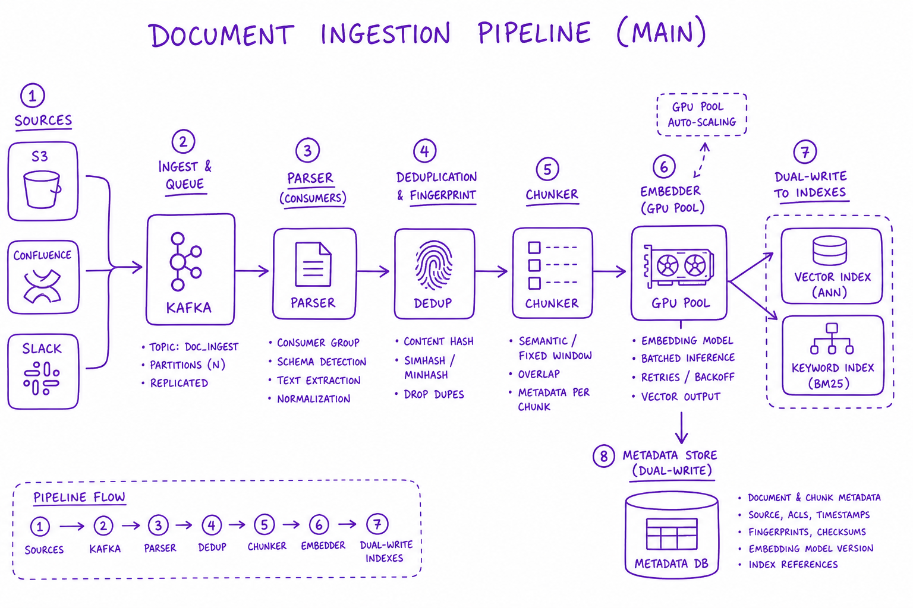
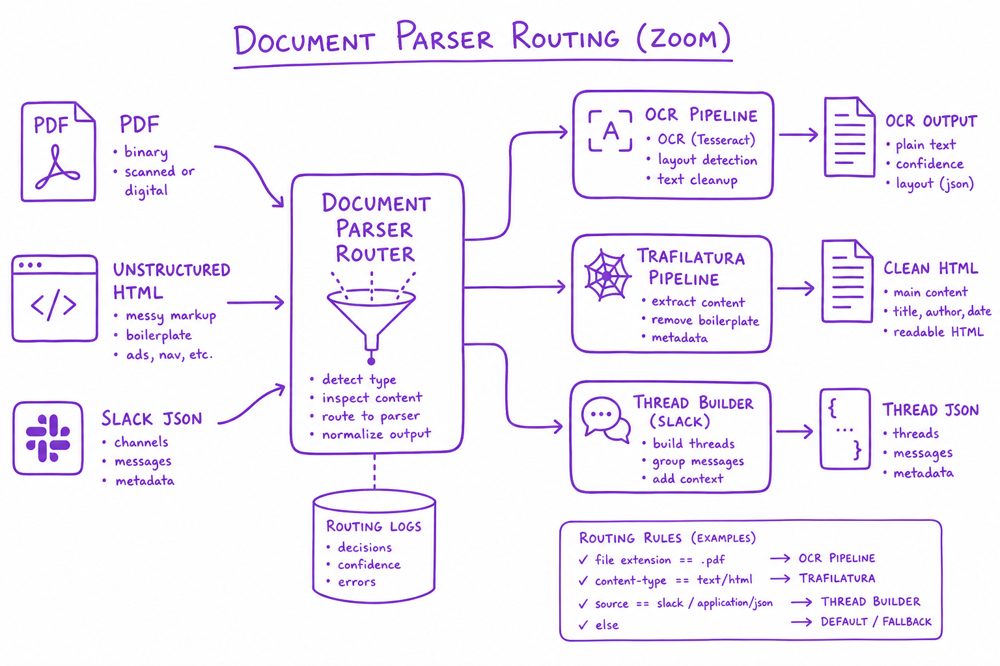
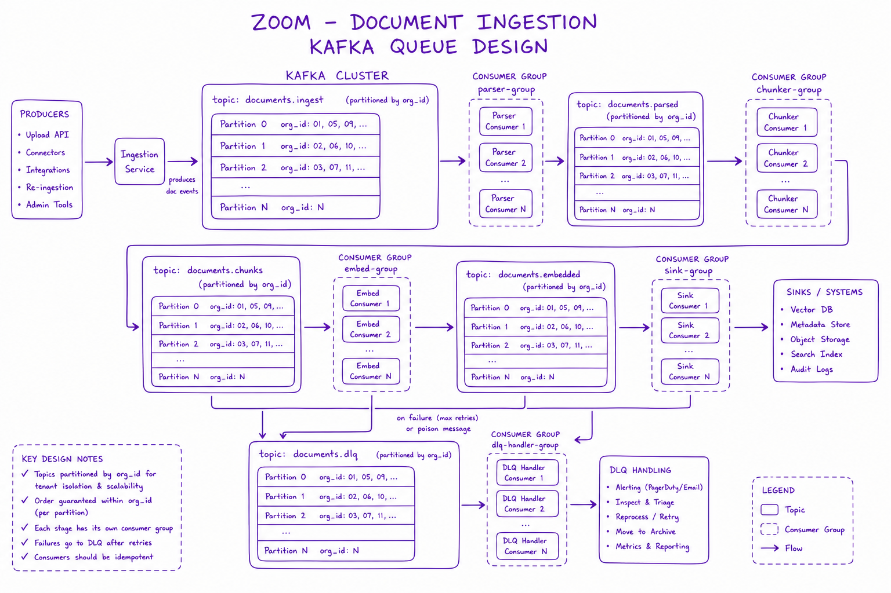

Document Ingestion Pipeline // Systems
Parse, OCR, dedupe, chunk, embed, and index at scale. Ingest is 80% of RAG quality — garbage in, hallucination out.

Document ingestion pipeline: sources (S3, Confluence, Slack) → Kafka queue → parser workers → dedup by content_hash → chunker → embed GPU pool → dual-write indexes + metadata DB.
01 — What & Why
RAG quality ceiling is set at ingest. Parsing failures, bad OCR, and stale indexes cause retrieval misses before the query path runs.
01a — Core Concepts
| Term | Definition | Gotcha |
|---|---|---|
| CDC | Change data capture from sources | Miss deletes without webhooks |
| content_hash | SHA256 of normalized text | Skip re-embed if unchanged |
| Near-line | Minutes freshness via streaming ingest | Higher cost than batch |
01b — API Surface
POST /v1/documents { source_url, org_id, metadata }
-> 202 { job_id, status: "QUEUED" }
GET /v1/documents/{doc_id} -> { status, chunk_count, content_hash }
DELETE /v1/documents/{doc_id} -> 204 tombstone02 — When to Use / When NOT
| Mode | Use When | Skip When |
|---|---|---|
| Batch nightly | Stable docs, cost-sensitive | Need minute freshness |
| Near-line CDC | Confluence/Notion live sync | Static PDF archive |
03 — Architecture
Sources -> Kafka -> Parser -> Dedup -> Chunker -> Embed -> [Vector + Sparse + Postgres meta]
04 — Deep Dive: Parsing & OCR

Parser routing: PDF to OCR/unstructured, HTML to trafilatura, Slack JSON to thread builder
Unstructured, Docling, Tesseract OCR. Preserve tables. Strip boilerplate nav/footer.
05 — Deep Dive: Dedup & CDC
content_hash skip if unchanged. CDC webhooks from Confluence/ Drive. Tombstone on delete; async index purge.
06 — Deep Dive: Queue Design

Kafka partitioned by org_id; consumer groups for parser, chunker, embed stages with DLQ
Kafka/SQS with DLQ. Backpressure when embed GPU saturated. Priority queue for user-triggered refresh.
07 — Deep Dive: Embed Workers
GPU pool batching 256 chunks/call. Idempotent upsert by chunk_id. Rate limit per org.
08 — Deep Dive: Freshness
Target: new doc searchable <5 min. Monitor ingest lag p99. Reconciliation job nightly for missed CDC events.
09 — Production & Ops
- Parser failure rate by mime type dashboard
- DLQ replay tooling
- Ingest lag alerts
10 — Where It Shows Up
11 — Common Pitfalls
- Sync ingest blocking API
- No tombstone on delete — zombie chunks
- OCR quality ignored
- Re-embed entire corpus on 1% change